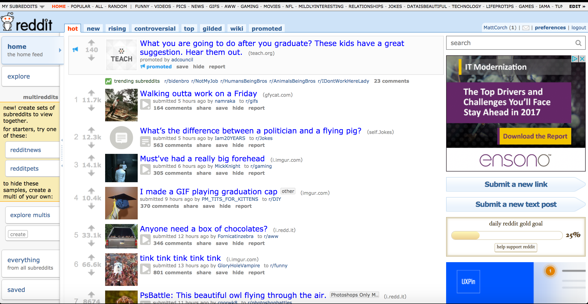
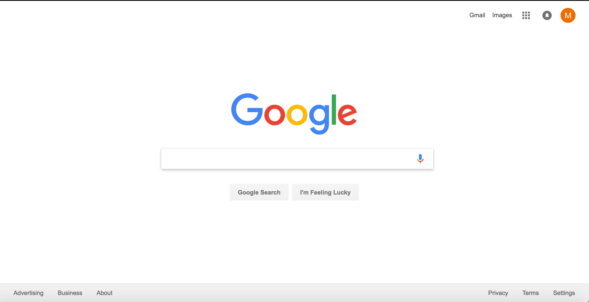
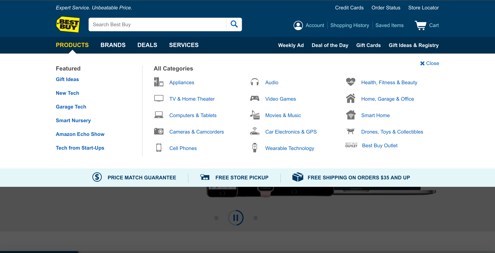
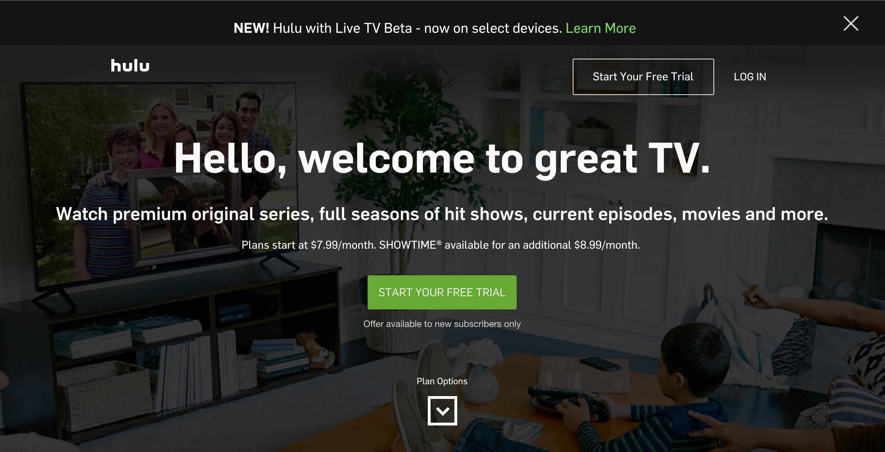

Chunking

Reddit is an excellent example of 'Chunking' for several reasons. One
standout reason is just the way the information on the page is laid-out.
All of the important information on the page is highlighted in blue.
They are short and sweet headlines of the information that is presented when
you click on the link.
Signal-to-Noise

Google does a very job of using white space to portray 'Signal-to-noise ratio'.
As you can see, on the home page of Google the standout information is the giant,
'Google' in colored letters. The accent of white that surrounds the title, and
the limited amount of noise is the reason this website does a great job of showing
signal-to-noise ratio.
Hick's Law

'Hick's Law' focuses on simplicity and trying to help the user make a decision
quicker and without thought. Apple's home page is a very simple and good example
of 'Hick's Law' because of the layout of the menus at the top. The menus are very
simple and content surrounding the menus are very simple. This simplicity will
allow a user to look at something that catches their eyes and make a quick and
easy decision.
Mapping

The Best Buy website search bar does a good job at portraying the segway between
the users curiosity to the users desired product. This idea of 'Mapping' is used
on many websites but Best Buy does a good job at making the search bar on their
website accessible and accurate. They use a magnifying glass as the submit button
which definitely is unique and catches the eye.
Affordance

"START YOUR FREE TRIAL" is something we see on any subscription based website
in big letter and designed in a way that portrays 'Affordance'. Hulu's home page
as a design focused around those four words they believe are most important to
the user. This design is a good example of the 3D button that the 'Affordance'
design of a website requires.